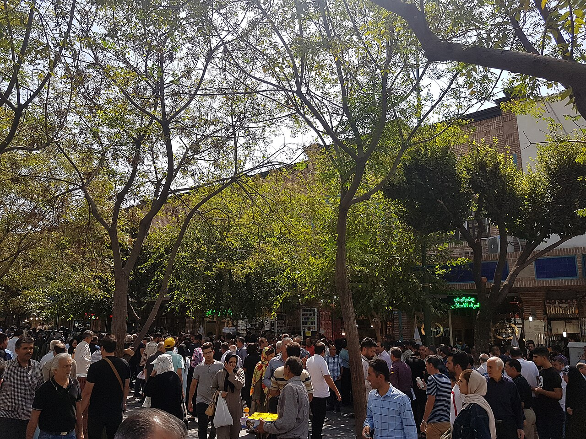

Topics
Guide
Stories about “Guide” (3).

GUIDE · Farsçadan
The rial-toman distinction, official and parallel exchange rates, chronic inflation, and sanctioned oil exports; a guide to reading Iran's economy.

GUIDE · Farsçadan
Structure, branches, Basij and Quds Force relationship, and differences from the regular army, with sourced figures.

GUIDE · Farsçadan
Guide to the powers of the Supreme Leader, President, Parliament, Guardian Council, Expediency Council, and Assembly of Experts, with sources.